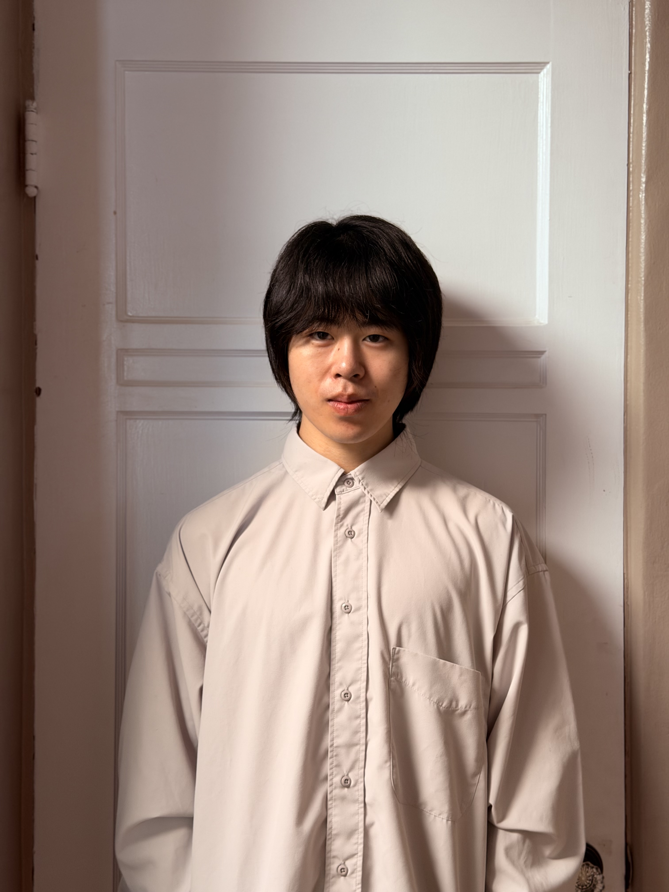

Hey, I'm Jacob Tom
Engineer | Designer
About Me
I’m always looking for opportunities to turn the ideas of the future into tangible results in the present. As an undergraduate electrical engineering student, I enjoy bridging theory and practice through hands-on work with circuits, signals, and embedded systems.
I’m especially motivated by problem-solving, whether that means debugging a stubborn circuit, refining code, or validating designs through real measurements.
I’m currently seeking a summer internship where I can apply classroom knowledge to real-world engineering challenges while learning from experienced engineers. My background includes circuit analysis, analog and digital electronics, and programming for engineering applications, along with practical lab experience using oscilloscopes, power supplies, and other measurement tools.
I’m eager to contribute to technical projects and continue developing my skills in a professional environment. If you’re open to connecting or discussing internship opportunities, projects, or engineering work, feel free to reach out! I’d love to start a conversation.
Technical Skills
Proficient
Developing
Engineering Projects
(Click on Projects to View)
Multi-Cycle MIPS
Profilometer

Mars Rover
decibel meter
Basketball Robot
Work Experience
(Click the Card to Expand)
October 2024 – Present
Harvard Recreation | Rock Wall Manager
Cambridge, MA
- Led the transition of the Harvard Climbing Wall from an independent organization to an official university activity, coordinating organization, renovations, upgrades, and cleaning.
- Organized climbing events and social activities to foster community engagement and increase participation.
Awards/Achievements
- Successfully managed operational changes during the transition while maintaining safe and consistent wall access.
- Contributed to improved facilities and programming for student climbers.
August 2023 – June 2027
Harvard University | Bachelor of Science, Electrical Engineering
Cambridge, MA
GPA: 4.0
Relevant Coursework
- Computing Hardware
- Systems and Control Theory
- Circuits and Devices
- Signals (current)
- Electromagnetism Physics
- Wave Physics (audio, optics)
- Introductory Computer Science
Awards/Achievements
- Detur Book Prize (high academic standing award)
- John Harvard Scholarship
- Harvard Faculty Scholarship (x2)